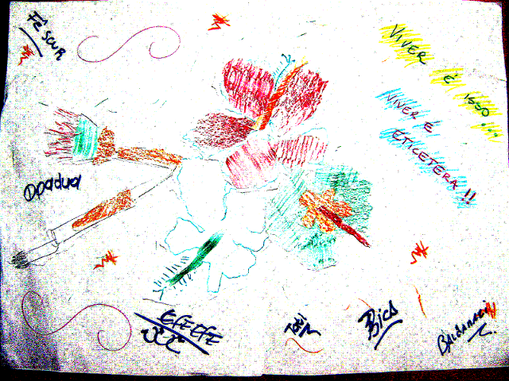
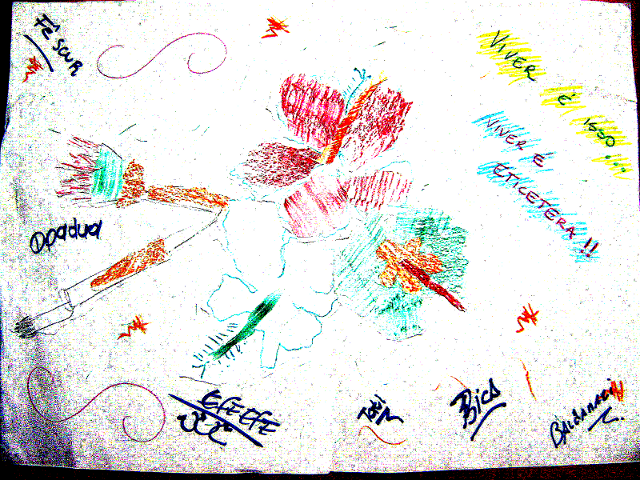

Por que eu penso que o trabalho de Hernani Dimantas requer uma atenção especial do bando, independente das posições políticas e ideológicas de cada um? E isso importa?
Pelo que sei o Hernani está nas conversações e ações de muito do que hoje é "conhecido" como MetaReciclagem desde o comecinho do comecinho do comecinho. Ou seja, as pessoas que partilharam conversas, maquinaram juntas, propuseram e executaran as primeiras ações que compõem boa parte do que MetaReciclagem representa hoje. Eu disse "representa" e não disse "é", certo? Aliás, o que MetaReciclagem "é" continua sendo um jogo dos mais interessantes. Nessa conversa precisei pedir até ajuda no twitter para conseguir usar o verbo "ser", o que acabou resultando em algo que o mbraz escreveu e que merece ser registrado:
dasilvaorg: qdo digo que algo representa a metarec digo: é uma representação da metarec. Se eu quiser dizer que algo é a metarec, direi?
mbraz: responderei por mim mesmo, ok, nao pela metareciclagem. Uso o verbo fazer, algo faz a metareciclagem e etc. Poderia ser produzir tambem, pois e' diferente de trabalho, representacao do produzir. Já' usei tambem 'acontecer', pois processo e nao produto. Ex, o encontrao de pessoas em Arraial 'aconteceu' na metareciclagem. Nao sei se ajudo, mas preciso acontecer metareciclagem em sp agora, ok ?
Quando eu falo em "representação", intuitivamente, sem nenhum contexto teórico acadêmico, penso em "imagem mental", "significação subjetiva", "apropriação particular e contextual". Quando eu falo em "Ser" aí tudo fica mais complicado e intrigante. E se eu pensar no nome "rede" essa complicação começa a ficar ainda mais intrigante e instigante.
Até agora não me resolvi ainda com esse "Ser" rede. As conversas que vi em torno de Redes Sociais não me convencem. E a conversa que mais tem me convencido até agora, que é a das redes da Actor-Network Theory (conhecida por mim basicamente pelo trabalho de Bruno Latour) requer associações com as quais eu ainda tenho bastante dificuldade em trabalhar com. Aparências de inconsistência de um lado e aparências de consistência de outro, sendo isto algo altamente subjetivo (aliás o que é o objetivo?) melhor voltar às questões do começo do texto.
Já falei que o hd está no núcleo inicial da construção da coisa (MetaReciclagem). Mas não é só isso. Ele permanece sendo respeitado, ouvido e considerado por outros que também estavam por lá e podem, a partir do que dizem os registros na Internet, ser considerados o núcleo inicial de toda esta "representação" do que temos aqui. Penso que só isso já seria um bom motivo para refletirmos sobre a importância ou não de de colaborar com seu trabalho. Mas tem mais que isso. E para ampliar esta estória quero acrescentar mais dois nomes: Felipe Fonseca e Dalton Martins.
Hernani Dimantas, Felipe Fonseca e Dalton Martins têm mais alguma coisa em comum do que "MetaReciclagem". O que? O Weblab.tk. Penso que esse é um ponto que merece destaque na conversa. Aqui ou acolá toco no nome Weblab.tk, mas sempre evito dar ênfase porque a forma como vejo isto me parece ainda fortemente associada a um contexto século XX. Mas aqui e agora me parece o lugar e o momento certo de falar disto pensando em clarear visões juntos. Ainda que atualmente eu esteja um pouco desencantado e não espere mais que alguém que pudesse a vir a clarear isto junto chegue a ler este texto e interagir (muito texto, pouco status do escritor), o que me faz insistir na escrita talvez seja esta noção de que fatos são construções e, portanto, se for fato de que MetaReciclagem seja (agora o verbo ser) algo diferente, em termos da administração, do que eu interpreto como século XX way, isto é também uma construção.
Indo direto ao ponto. Existem três pessoas, as que eu já mencionei, que estão fortemente associadas às "representações" MetaReciclagem. Ao mesmo tempo, estas três pessoas hoje trabalham juntas em algo que tem o nome de Weblab.tk. Quando eu começo as associações por aí vejo uma "Rede" interessante e, na minha percepção, altamente influente em algumas coisas que se combinam a partir dos nomes: Políticas Públicas, Inclusão Digital e Cultura Digital (só pra sintetizar em 3), e que que merecem no mínimo ser discutidas por quem está aqui numa "representação" MetaReciclagem.
Esta é uma chance de jogarmos luz em algumas coisas, penso eu. Weblab.tk é certamente só uma dimensão. Dimensão? Uma das que me chamou a atenção dentre outras como: des).(centro, Estudio Livre ou Orquestra Organismo, por exemplo e para ficar em nomes de "conjuntos" apenas, e não continuar na cilada de listar pesssoas. Porque sei que tem tanta coisa que não vejo aí, não é mesmo? Aliás, nisto se configura a pertinência da conversa em torno do trabalho do hd. Ou seja, talvez seja apenas um querer egoísta. Mesmo assim, não cedendo às aparências, venho aqui e registro. Tem relevância? Ah... Isso, sozinho eu não tenho como dizer.


 
